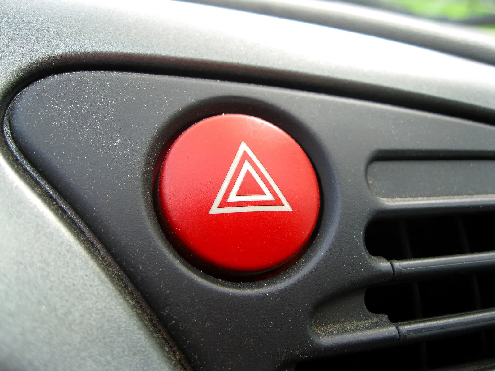
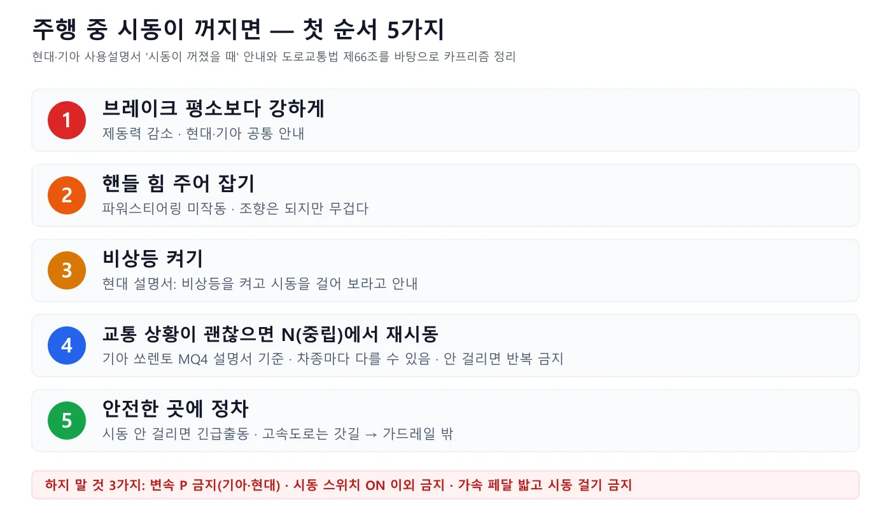
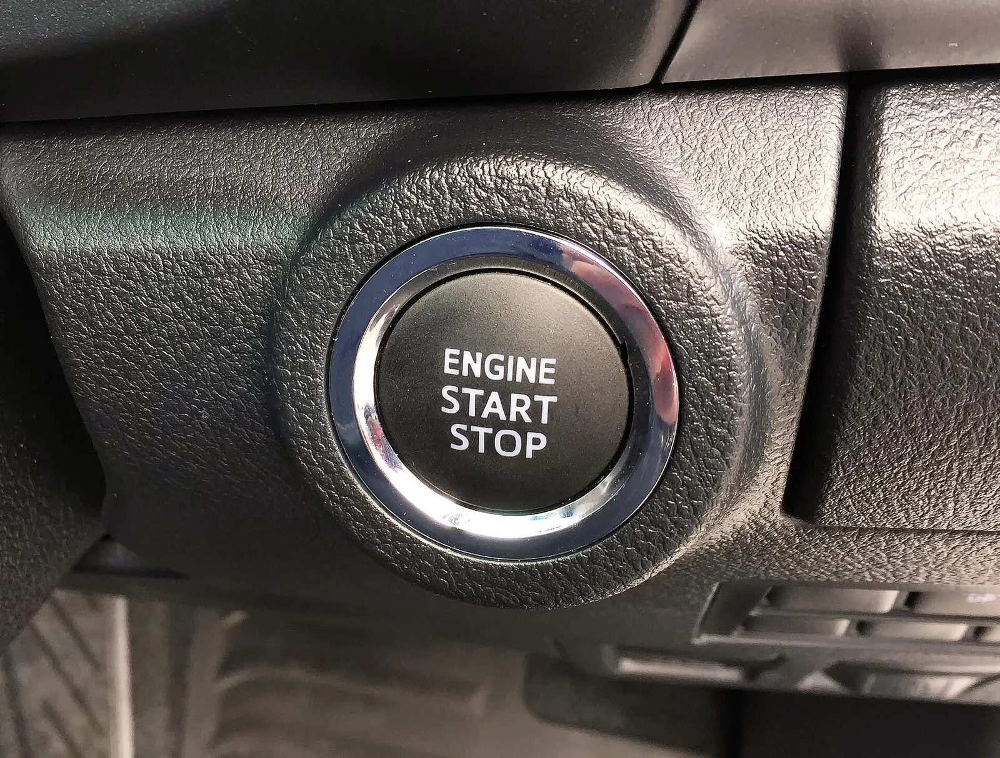
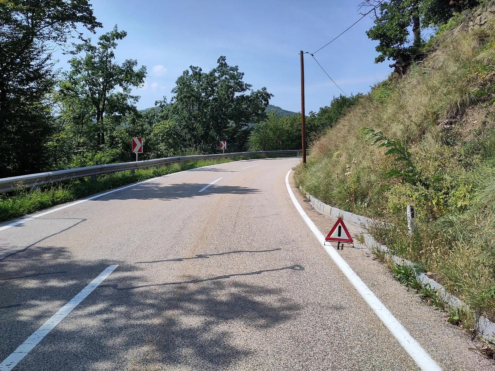
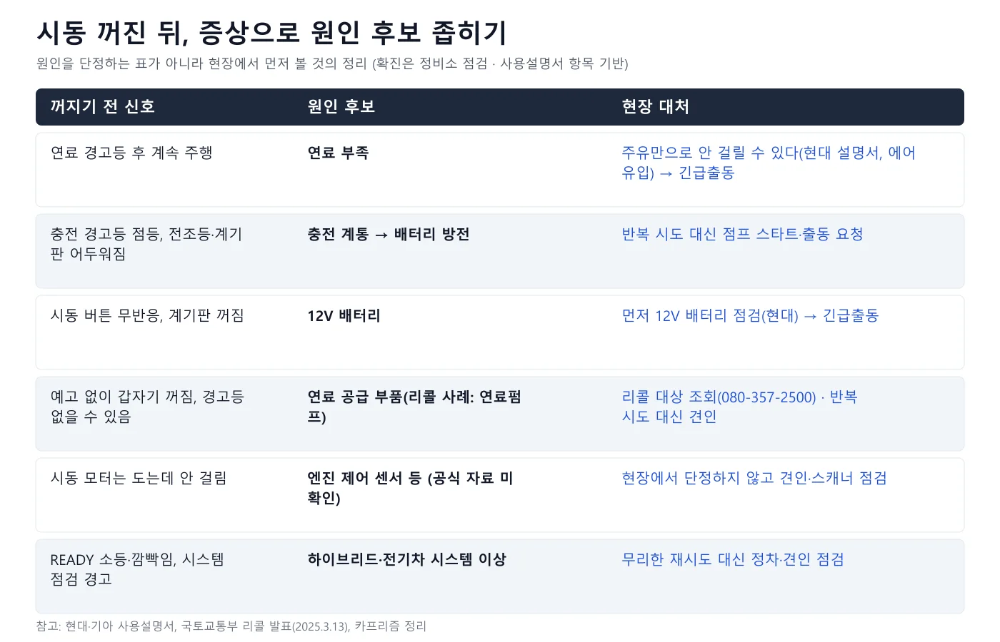
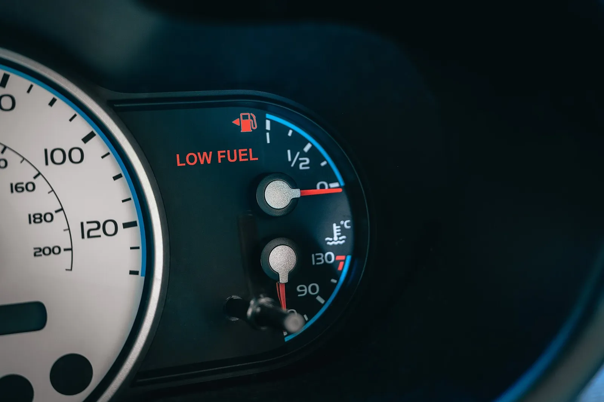
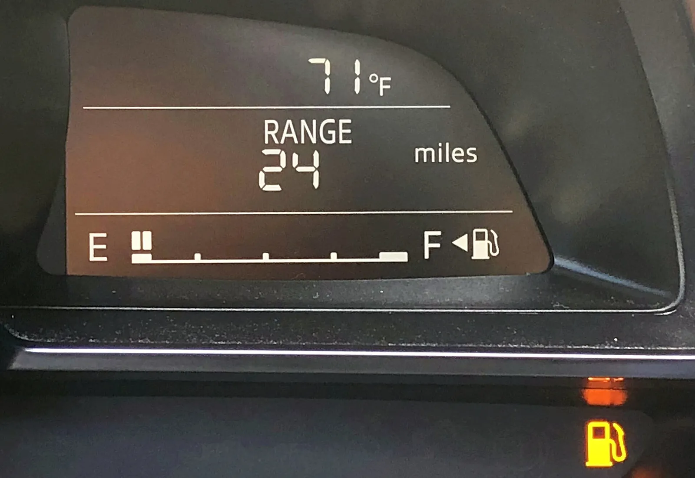
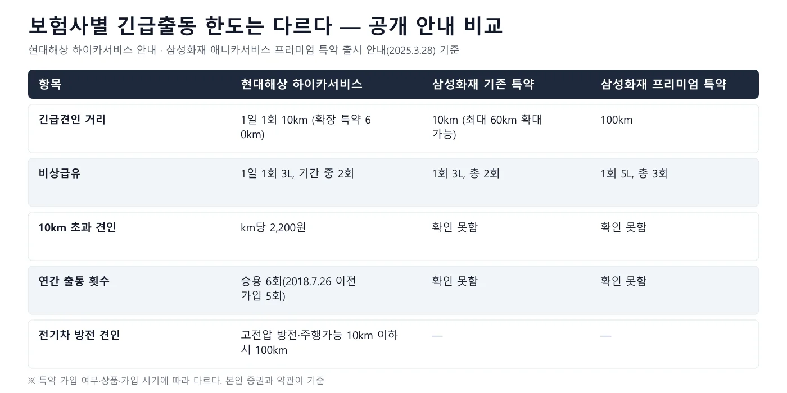
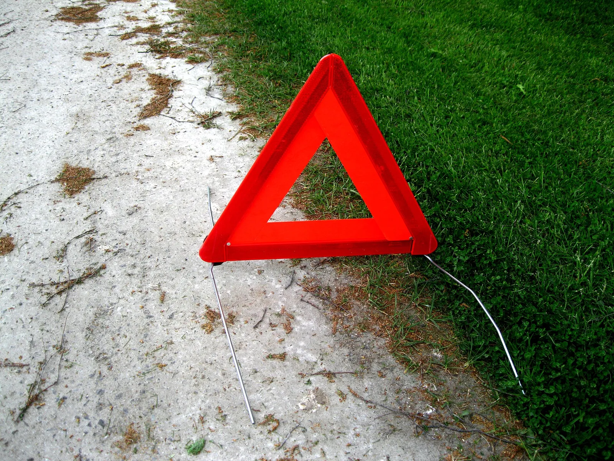

▲ 대시보드의 비상등 스위치. 현대 사용설명서는 주행 중 시동이 꺼지면 안전한 곳으로 이동한 뒤 비상등을 켜고 시동을 걸어 보라고 안내한다 ⓒ Santeri Viinamäki, Wikimedia Commons (CC BY-SA 4.0)
"달리는 중에 갑자기 시동이 꺼졌다. 브레이크는 밟히는데 평소와 다르고, 핸들이 돌아가지 않는 것 같다." 실제로 겪으면 순간적으로 몸이 굳는다. 이 글은 2026년 10월 10일 기준으로 현대자동차·기아 온라인 사용설명서, 국가법령정보센터(도로교통법·시행규칙), 정책브리핑이 실은 한국도로공사 안내, 국토교통부 리콜 발표, 현대해상·삼성화재의 긴급출동 안내를 직접 열어 확인한 내용만 썼다. 확인하지 못한 것은 "확인하지 못했다"고 적었다. 차종·연식에 따라 절차가 다를 수 있으므로 최종 기준은 본인 차의 사용설명서다. 점프 스타트·배터리 교체 시기·주유 경고등·스마트키 인식 오류·엔진오일 경고등은 각각 별도 기사로 다뤘으니, 여기서는 '이미 달리는 중에 꺼졌을 때'의 순서와 재시동 판단에 집중한다.
1. 시동이 꺼지면 달라지는 것 — 브레이크 보조와 핸들 보조가 함께 줄어든다
현대·기아 사용설명서의 '주행 중 시동이 꺼졌을 때' 항목은 두 가지를 똑같이 적는다. 제동력이 떨어지니 브레이크를 평소보다 강하게 밟고, 파워스티어링이 작동하지 않으니 핸들을 평소보다 힘주어 돌리라는 것이다. 현대자동차 사용설명서의 '시동이 꺼진 경우'는 "시동이 꺼지면 브레이크의 제동력이 감소하므로 브레이크 페달을 평소보다 강하게 밟으십시오"와 "파워 스티어링 장치가 작동하지 않아 스티어링 휠 조작이 어려워질 수 있으므로, 평소보다 강한 힘으로 조향하십시오"라고 적고, 기아 사용설명서도 같은 취지로 안내한다. 기아 사용설명서의 주의 항목에는 "주행 중에는 시동을 끄지 마십시오"와 함께 브레이크 성능이 떨어지거나 스티어링 휠 조작이 불가능해질 수 있어 매우 위험하다는 문구가 있다. 현대 '시동이 꺼진 경우' 바로가기 기아 '주행 중 시동이 꺼졌을 때' 바로가기
▲ 대시보드의 비상등(핸들 보조·제동 보조가 줄어든 상태에서도 손이 닿는 가장 빠른 조작이다). 현대 사용설명서는 안전한 곳으로 이동한 뒤 비상등을 켜고 시동을 걸어 보라고 안내한다 ⓒ Santeri Viinamäki, Wikimedia Commons (CC BY-SA 4.0)
왜 그런지는 구조로 설명할 수 있다. 아래 풀이는 카프리즘이 정리한 일반 설명이고, 어느 차가 어떤 방식인지는 사용설명서가 다룬다.
| 장치 | 평소 | 시동이 꺼지면 | 운전자 대응 |
|---|---|---|---|
| 브레이크 부스터(진공 배력) | 엔진 또는 전동 진공 펌프가 만든 진공이 페달 힘을 키워 준다 | 제동력이 감소한다고 현대·기아가 안내. 현대 글로벌 사용설명서는 엔진이 꺼져 있으면 브레이크를 밟을 때마다 남은 보조 동력이 부분적으로 줄어든다고 적는다 | 평소보다 강하게 밟는다. 현대 글로벌 설명서는 보조가 끊긴 상태에서 브레이크 페달을 펌핑하지 말라고 안내한다 |
| 유압식 파워스티어링 | 엔진이 돌리는 펌프의 유압이 핸들을 돕는다 | 펌프가 멈춰 보조가 사라진다(카프리즘 설명). 조향 자체는 되지만 무겁다 | 양손으로 힘주어 조향한다 |
| 전동식 파워스티어링(MDPS) | 전기 모터가 핸들을 돕는다 | 현대 사용설명서(MDPS 항목)는 시스템이 꺼지거나 고장 나도 조향은 가능하지만 더 많은 힘이 든다고 안내한다. 보조가 얼마나 남는지는 차종·원인에 따라 달라 설명서가 단정하지 않는다 | 보조가 없다고 가정하고 힘주어 조향한다 |
| 전동 진공 펌프형 부스터(일부 전기차·하이브리드) | 모터로 구동하는 진공 펌프가 진공을 유지한다 | 기아 전기차 사용설명서는 부스터가 정상 작동하지 않으면 페달 힘이 더 들고 제동거리가 길어질 수 있다고 안내한다 | 마찬가지로 더 세게 밟는다 |
⚠️ 남은 제동 횟수는 몇 번일까?
온라인에서는 "두세 번은 밟힌다" 같은 숫자가 돌지만, 이번에 확인한 현대·기아 사용설명서와 교통안전공단·한국도로공사 자료에서 남은 제동 횟수를 숫자로 정한 곳은 찾지 못했다. 현대 글로벌 사용설명서는 "엔진이 꺼져 있으면 브레이크를 밟을 때마다 남은 보조 동력이 부분적으로 줄어든다"고만 적는다. 그러니 '몇 번 남았다'를 믿고 마지막 순간까지 버티지 말고, 첫 브레이크부터 속도를 충분히 줄이는 쪽으로 쓰는 것이 설명서 취지에 맞다. 속도·페달 힘·차 무게에 따라 결과가 달라 확정 숫자를 말할 수 없다.
2. 즉시 할 행동 순서 — 5가지와 하지 말아야 할 3가지
순서는 '멈추는 것'이 먼저이고 '다시 거는 것'이 나중이다. 현대 사용설명서 안전 운행 항목은 "주행 중 만일 엔진의 시동이 정지된 경우는 당황하지 말고 브레이크 페달을 밟으면서 감속하여 안전한 장소로 정차한 후 점검해 주십시오"라고 안내한다. 기아 사용설명서(쏘렌토 MQ4 2022년형 '시동이 걸리지 않을 때 조치 방법')는 교통과 도로 상태가 괜찮다면 차가 완전히 멈추기 전에 변속 위치를 N(중립)에 두고 시동 버튼을 눌러 다시 걸 수 있다고 설명한다. 아래는 두 설명서를 합쳐 정리한 순서다.

▲ 현대·기아 사용설명서 안내를 바탕으로 정리한 5단계 ⓒ 카프리즘 제작 도표
| 단계 | 할 일 | 근거 |
|---|---|---|
| 1 | 브레이크를 평소보다 강하게, 그러나 급하게 몰아치지 말고 속도를 줄인다 | 현대·기아 '시동이 꺼졌을 때' 항목(제동력 감소), 현대 안전 운행(감속하며 정차) |
| 2 | 핸들을 양손으로 단단히 잡고 평소보다 힘주어 조향한다 | 현대·기아 사용설명서(파워스티어링 미작동) |
| 3 | 비상등을 켠다 | 현대 사용설명서 '주행 중 시동이 꺼진 경우'(비상등을 켜고 시동을 거십시오) |
| 4 | 교통 상황이 괜찮으면 완전히 멈추기 전에 N(중립)에 놓고 시동 버튼을 눌러 재시동한다. 안 걸리면 반복하지 않는다. N 재시동은 확인한 기아 쏘렌토 MQ4 설명서의 안내이며, 현대 QT 2026 설명서는 N 언급 없이 비상등을 켜고 시동을 걸라고 하는 등 차종마다 다르다 | 기아 사용설명서(쏘렌토 MQ4 2022년형), 현대 사용설명서(QT 2026: 시동이 걸리지 않으면 긴급출동에 연락) |
| 5 | 갓길·졸음쉼터·길 가장자리 등 안전한 곳에 정차해 점검한다. 고속도로면 가드레일 밖으로 대피한다 | 현대 안전 운행 항목, 도로교통법 제66조, 한국도로공사 안내(정책브리핑) |
3단계의 비상등은 사용설명서가 '안전한 곳으로 옮긴 뒤'의 순서로 적었지만, 뒤차에 상황을 알리는 가장 쉬운 조작이므로 한 손으로 먼저 누르는 것이 일반적인 안내다. 이 부분은 설명서의 순서와 다를 수 있어 카프리즘의 판단임을 밝힌다.
하지 말아야 할 것 3가지
🚫 이것만은 하지 마세요
· 변속 레버를 P에 넣지 않는다: 기아 사용설명서(쏘렌토 MQ4)와 현대 사용설명서(US4 2026년형)는 주행 중 시동이 꺼져도 변속 위치를 P에 두지 말라고 안내하며, 제동 거리가 길어지거나 변속기가 손상될 수 있다고 적는다
· 시동 스위치를 ON 이외로 돌리거나 끄지 않는다: 현대 사용설명서는 "운행 중 시동 스위치를 'ON' 이외에는 절대로 돌리지 마십시오"라고 적고, 기아 사용설명서는 주행 중에는 시동을 끄지 말라고 안내한다. 버튼식 시동 차량이라도 달리는 중에 시동 버튼을 눌러 끄지 않는다(기아 사용설명서는 주행 중 시동 버튼을 누르지 말라고 경고한다). 길게 누르는 비상 절차는 정차 중 시동이 안 걸릴 때의 것이다
· 가속 페달을 밟은 채 시동을 걸지 않는다: 기아 사용설명서와 현대 사용설명서(US4 2026)는 가속 페달을 밟은 상태에서 시동을 걸면 차가 갑자기 움직여 사고가 날 수 있다고 경고한다

▲ 버튼식 시동 스위치(사진은 토요타 하이럭스). 기아 사용설명서(MQ4)는 정지등(제동등) 퓨즈 고장 같은 비상 상황을 제외하고는 시동 버튼을 약 10초 이상 길게 누르지 말라고 안내한다 ⓒ Johntorcasio, Wikimedia Commons (CC BY-SA 4.0)
3. 도로에서의 행동 — 고속도로에서는 '멈춘 뒤'가 더 위험하다
차를 고속도로 밖으로 옮기는 조치는 법이 정한 의무다. 국가법령정보센터에서 2026년 10월 확인한 도로교통법 제66조는 고장이나 그 밖의 사유로 고속도로등에서 자동차를 운행할 수 없게 되었을 때 고장자동차의 표지를 설치하고 그 자동차를 고속도로등이 아닌 다른 곳으로 옮겨 놓는 등의 필요한 조치를 하라고 정한다. 제64조는 고속도로등에서 정차를 금지하면서 제3호에서 고장이나 그 밖의 부득이한 사유로 길가장자리구역(갓길 포함)에 정차하는 경우를 예외로 둔다. 시행규칙 제40조는 표지로 안전삼각대, 그리고 밤에는 사방 500미터 지점에서 식별할 수 있는 적색 섬광신호·전기제등·불꽃신호를 정하고, 후방에서 접근하는 운전자가 확인할 수 있는 위치에 설치하라고 한다. 도로교통법 바로가기

▲ 커브 앞 길가장자리에 놓인 안전삼각대(국내 고속도로가 아닌 유럽 일반도로 사진이며 설치 위치의 참고용이다). 삼각대의 설치 거리·방법은 별도 기사에서 다룬다 ⓒ Jaller94, Wikimedia Commons (CC0)
시동이 꺼진 차는 멈춰 있는 동안 비상등만 켜져 있다. 한국도로공사 안내가 강조하는 순서는 '비트박스'로 요약된다. 정책브리핑(2024년 7월 31일 게재)은 비상등 켜고, 트렁크 열고, 밖으로 대피, 스마트폰으로 신고하라는 내용을 소개했고, 같은 기사는 최근 3년간 고속도로 사망자 506명 중 2차 사고 사망자가 85명(17%)이라고 전했다. 시동 꺼짐의 특성은 '내가 원하는 곳까지 못 간다'는 점이라, 꺼지는 순간 보이는 졸음쉼터·갓길·진출로 중 가장 가까운 곳으로 속도를 줄여 흘러가는 것이 현실적인 선택이다. 이때 다른 차로를 가로지르지 말고 가장 오른쪽 차로로 서서히 이동한다. 이 이동 방법은 설명서에 있는 문구가 아니라 카프리즘이 정리한 일반 원칙이다.
갓길 정차 후의 대피 방법, 무료 긴급견인, 안전삼각대 기준은 이미 기사로 정리했으니 겹치는 부분은 건너뛴다.
🔗 먼저 읽어 두면 좋은 기사
· 정차한 뒤의 행동과 2차 사고 통계는 "치사율 48%"… 고속도로에서 차가 멈췄을 때, 삼각대보다 먼저 할 일
· 삼각대 설치 의무와 거리는 안전삼각대·불꽃신호기 설치 기준 기사
· 트렁크에 늘 실어 둘 물건은 비상용품 트렁크 체크리스트
4. 원인별 판별 — 꺼지기 전에 어떤 신호가 있었나
시동 꺼짐의 원인은 크게 연료, 전기(충전·배터리), 연료 공급 부품, 하이브리드·전기차의 시스템 이상으로 나뉘고, 꺼지기 직전의 경고등이 가장 큰 단서다. 현장에서 원인을 확정할 수는 없다. 아래 표는 '무엇을 먼저 보고 어떻게 움직일지'를 정리한 것이며, 확진은 정비소 점검의 몫이다.

▲ 증상으로 원인 후보를 좁히는 순서도 ⓒ 카프리즘 제작 도표(현대·기아 사용설명서 항목 기반)
| 원인 후보 | 꺼지기 전 신호 | 확인한 근거 | 재시동 판단 |
|---|---|---|---|
| 연료 부족 | 연료 경고등 점등 후 계속 주행, 바늘이 바닥 | 현대 사용설명서: 연료가 떨어져 시동이 정지됐을 때는 연료 계통에 에어가 들어 있어 연료 보충만으로는 시동이 걸리지 않으며 에어빼기를 하라고 안내 | 주유해도 안 걸릴 수 있다. 긴급출동 호출이 현실적 |
| 충전 계통(발전기·충전 장치) | 충전(배터리) 경고등이 먼저 켜졌고, 전조등·계기판이 점점 어두워짐 | 현대 전기차 사용설명서(NE1 2025년형 경고등 항목): 충전 경고등은 충전 장치에 이상이 있을 때 켜지고, 켜진 채 계속 주행하면 배터리가 방전될 수 있다고 안내 | 방전 상태에서 반복 시도는 소용없다. 점프 스타트나 출동 요청(점프 스타트 기사 참고) |
| 12V 배터리 | 시동 버튼이 반응 없음, 계기판이 꺼짐 | 현대 사용설명서: 시동이 안 걸릴 때 가장 먼저 12V 배터리를 점검하라고 안내 | 배터리 교체 시기 기사 참고. 긴급출동으로 시동 조치 |
| 연료 공급 부품(연료펌프 등) | 예고 없이 갑자기 꺼짐, 경고등이 없을 수 있음 | 국토교통부 2025년 3월 13일 발표 리콜: 토요타 캠리 등 3개 차종 1,168대(연료펌프 부속품 제조 불량), 크라이슬러 300C 1,731대(고압 연료펌프 부속품 내구성 부족)가 시동 꺼짐 가능성으로 리콜 | 내 차가 리콜 대상인지 자동차리콜센터(080-357-2500, car.go.kr)에서 확인. 반복 시도 대신 견인 |
| 크랭크축 센서 등 엔진 제어 센서 | 꺼진 뒤 시동 모터는 돌지만 시동이 안 걸리는 증상 등 | 이번 조사에서 현대·기아 설명서나 국토교통부 자료에서 크랭크축 센서를 시동 꺼짐 원인으로 직접 설명한 항목을 확인하지 못했다. 일부 사용설명서는 엔진 제어 장치 고장 때 시동이 안 걸릴 수 있으며 이때는 견인하라고 안내 | 센서 여부는 스캐너 점검으로 판별. 현장에서 단정하지 않는다 |
| 하이브리드·전기차 READY 소등 | READY(주행 가능) 표시등이 꺼지거나 깜빡임, '하이브리드 시스템 점검' 경고문 | 현대 설명서: READY는 차량 이상 시 꺼지거나 깜빡이며 하이테크센터·블루핸즈 점검 안내. 기아 설명서: 꺼짐은 정상 주행 불가능 상태·고장 발생 시, 깜빡임은 비상 운전 상태. 현대 하이브리드 설명서: 경고문과 함께 주행 가능 표시등이 깜빡이고 약 10초 경고음이 나면 안전한 곳에 정차하라고 안내 | 무리한 재시도 대신 견인 점검. 전원 공급 장치 이상이면 정차 후 견인하라고 안내 |
연료 부족이 의심될 때
경고등이 켜진 뒤 얼마나 더 갈 수 있는지는 차종마다 달라, 이 기준은 이미 다룬 기사로 넘긴다. 다만 시동이 꺼진 뒤의 핵심은 현대 사용설명서 문구대로 "연료 보충만으로는 시동이 걸리지 않을 수 있다"는 점이다. 연료 부족이 원인이라면 시동을 반복해서 걸기보다 긴급출동의 비상급유 서비스를 부르는 쪽이 안전하다(카프리즘 판단). 주유 경고등이 켜진 뒤 남은 거리 기사에서 경고등 이후의 판단을 확인할 수 있고, 휘발유·경유를 잘못 넣어 꺼진 경우는 잘못된 연료를 넣었을 때를 참고한다.

▲ LOW FUEL 경고가 들어온 계기판. 현대 사용설명서는 연료가 떨어져 시동이 정지됐을 때 연료 보충만으로는 시동이 걸리지 않을 수 있다고 안내한다 ⓒ Icomparioimages, Wikimedia Commons (CC BY-SA 4.0)
충전·배터리 계통이 의심될 때
시동 꺼짐 직전에 충전 경고등이 있었거나 전조등·계기판이 서서히 어두워졌다면 12V 배터리 쪽을 의심한다. 현대 사용설명서는 시동이 걸리지 않으면 12V 배터리를 먼저 점검하라고 안내하고, 계속 안 걸리면 긴급출동지원센터에 연락하라고 적는다. 방전 후 점프 스타트 요령은 자동차 배터리 점프 스타트 기사, 배터리를 바꿀 때가 됐는지는 배터리 교체 신호 기사, 스마트키 인식 문제로 시동 버튼이 반응하지 않는 경우는 스마트키 미인식 기사에서 다뤘다.

▲ 계기판의 '주행 가능 거리'는 추정치일 뿐이다(사진은 마즈다3, 단위는 마일). 남은 거리 표시만 믿고 버티다 연료가 바닥나는 일이 없도록 경고등 이후에는 바로 주유한다 ⓒ Deloreanman14, Wikimedia Commons (CC BY-SA 4.0)
엔진 쪽 이상이 의심될 때
오일 압력 경고등이 켜지고 이상한 소리가 난 뒤 꺼졌다면 재시동이 오히려 피해를 키울 수 있다. 이 경우는 엔진오일 압력 경고등 기사의 순서를 따른다.
5. 재시동 시도 기준과 하지 말아야 할 것
재시동은 '안전이 확보된 뒤' 또는 '달리는 중 N에서 한 번' 정도가 설명서가 말하는 범위다. 기아 사용설명서(쏘렌토 MQ4 2022년형)는 시동이 안 걸리면 시동 버튼을 OFF에 두고 모든 전기 장치를 끈 뒤 다시 걸어 보라고 안내하고, 그래도 안 되면 직영 서비스센터나 서비스협력사 점검을 받으라고 한다. 현대 사용설명서는 시동이 걸리지 않으면 긴급출동에 연락하라고 적는다. 이를 바탕으로 카프리즘이 만든 판단 기준은 아래와 같다. 몇 번까지 시도하라는 숫자는 설명서에 없다.
| 상황 | 판단 | 이유(근거) |
|---|---|---|
| 안전한 곳에 정차, 경고등 없음 | 시동 버튼 OFF, 전기 장치 끄고 한 번 재시동 | 기아 사용설명서 재시도 방법 |
| 경고등 점등(충전·오일·엔진·하이브리드 시스템) | 반복 시도 금지, 출동 요청 | 현대 하이브리드 설명서(점검·견인), 오일·충전 경고등 기사 참고 |
| READY 소등 또는 깜빡임 | 정차 후 점검 요청 | 현대·기아 설명서(READY 꺼짐은 이상) |
| 연료 경고 이후 꺼짐 | 주유 후에도 안 걸릴 수 있음, 출동 요청 | 현대 안전 운행 항목(에어 유입) |
| 고속도로 본선·터널 안 | 시도하지 말고 대피 먼저 | 도로교통법 제66조, 한국도로공사 안내 |
| 시동 버튼 길게 누르기 | 비상 상황 외 10초 이상 금지 | 기아 사용설명서 |
✅ 재시동 전 체크리스트
· 안전한 곳인가: 갓길·쉼터·가드레일 밖에 사람이 서 있을 수 있는가
· 비상등과 삼각대(고속도로는 필수 표지)를 먼저 설치했는가
· 변속은 P(또는 N)에 두고 브레이크를 밟은 채 시동을 거는가
· 계기판에 충전·오일·엔진·하이브리드 시스템 경고가 있는가(있으면 시도 대신 출동)
· 이미 여러 번 걸어 봤다면 중단하고 배터리를 아끼는가
6. 긴급출동 호출 시 알려줄 정보 — 이것만 준비하면 시간이 줄어든다
고속도로에서는 한국도로공사 1588-2504가 무료 긴급견인을, 일반 도로에서는 보험사 긴급출동이 중심이다. 정책브리핑이 전한 국토교통부 설명(2020년 9월 21일 게재)에 따르면 한국도로공사 긴급견인은 승용차, 16인승 이하 승합차, 1.4톤 이하 화물차를 고장 난 지점에서 가까운 휴게소·졸음쉼터 같은 안전지대까지 무료로 견인해 준다. 안전지대에서 정비소까지는 보험사 긴급출동이나 본인 비용으로 이어진다. 신고할 때는 이정표·표지판을 보고 출구 번호, 지역 이름, 도로 번호를 알리라고 안내한다. 도로공사 홈페이지는 한국도로공사 바로가기에서 볼 수 있다. 같은 대상 기준(승용차·16인 이하 승합차·1.4톤 이하 화물차)은 한국도로공사 공지 「2504 긴급견인 서비스」(2012년 등록)에도 적혀 있다. 다만 이 공지도 오래된 자료라 서비스 대상·번호는 시점에 따라 바뀔 수 있어 게재일을 함께 적었고, 이용 전 1588-2504에서 현재 기준을 확인하는 것이 안전하다.
📞 호출할 때 알려줄 정보
· 위치: 도로 이름·방향, 가장 가까운 이정표·나들목·휴게소(고속도로는 출구 번호, 지역 이름, 도로 번호)와 갓길인지 본선인지
· 차량: 차종·연료(휘발유·경유·LPG·전기·하이브리드)·변속기, 번호판
· 증상: 꺼진 시점, 경고등 종류, 시동 버튼 반응, 시동 모터가 도는지, 연료 잔량, 주행 중 이상 소음 여부
· 안전 상태: 탑승자·어린이 여부, 가드레일 밖 대피 완료 여부, 삼각대 설치 여부
· 요청 사항: 시동 조치(배터리·급유) 또는 견인, 견인 목적지(정비소·제조사 서비스센터)
· 전기차: 고전압 배터리 잔량과 READY 상태. 현대해상 안내에는 고전압 배터리 방전 때 충전소까지 견인하는 항목이 있다
고속도로에서 보험사 견인차만 기다리다 2차 사고를 당하는 사례를 경계하는 안내는 오래전부터 반복된다. 정책브리핑의 2013년 기사(문화체육관광부 게재)는 보험사에 먼저 전화하고 차선에 머문 채 기다리는 운전자들이 많다고 지적했다. 이 기사는 오래된 자료이므로 방향성만 참고하고, 현재 절차는 한국도로공사 안내를 확인한다.
7. 자동차보험 긴급출동 한도 — 특약이고, 회사마다 다르다
긴급출동서비스는 자동차보험의 특약이고, 견인 거리·비상급유·횟수는 보험사와 상품마다 다르다. 금융위원회가 정책브리핑에 낸 2024년 7월 30일 안내는 특약 보장 항목으로 비상구난, 긴급견인, 비상급유, 배터리 충전, 타이어 수리·교체, 잠금장치 해제를 꼽고, 총 이용 횟수가 6회로 제한되며 서비스별 횟수 제한이 있을 수 있어 약관 확인이 필요하다고 적었다. 같은 안내는 보험사마다 특약 명칭과 보장 조건이 다르니 가입 전에 상담받으라고 했다. 아래는 공개 안내로 확인한 사례다.

▲ 공개 안내로 확인한 긴급출동 한도 비교(확인하지 못한 칸은 '확인 못함'으로 표시) ⓒ 카프리즘 제작 도표
| 항목 | 현대해상 하이카서비스 | 삼성화재 애니카서비스(2025.3.28 보도) |
|---|---|---|
| 긴급견인 | 1일 1회 10km, 확장 특약 60km, 전기차는 기본 100km 한도로 안내(고전압 방전 때 충전소까지 100km) | 기존 특약 10km(최대 60km 확대 가능), 프리미엄 특약 100km |
| 견인 초과분 | km당 2,200원 | 확인하지 못함 |
| 비상급유 | 1일 1회 3리터, 기간 중 2회, 휘발유·경유만, LPG는 충전소까지 견인 | 기존 1회 3리터·총 2회, 프리미엄 1회 5리터·총 3회 |
| 배터리 방전 | 시동 조치 제공, 배터리 교체는 별도 비용 | 기사에 언급 없음 |
| 연간 횟수 | 승용차 6회(2018.7.26 이전 가입은 5회, 단기 계약은 별도) | 확인하지 못함 |
🧮 계산 예시 — 견인 35km가 나왔다면
현대해상 안내 기준 기본 견인 10km, 초과분 km당 2,200원이다. 35km를 끌었다면 초과 25km × 2,200원 = 55,000원을 본인이 부담하는 계산이다(확장 특약 60km에 가입돼 있으면 이 거리에서는 추가 비용이 없는 구조). 상품·가입 시기에 따라 다르므로 본인 약관 숫자로 다시 계산해야 한다. 이 예시는 카프리즘 가정이며 실제 청구액은 보험사 확인이 필요하다.
현대해상 안내는 총 이용 횟수를 다 쓰면 같은 기간에 특약을 다시 가입할 수 없다고 적었다. 시동 꺼짐이 어떤 서비스로 처리되고 횟수가 어떻게 차감되는지는 상품 약관에 달려 있어 일반화해 말하기 어렵다. 연휴·한파 때 출동이 몰리는 상황과 연락 요령은 긴급출동 연휴 가이드에서 정리했다. 현대해상 하이카서비스 안내는 현대해상 안내 바로가기에서 확인할 수 있다.

▲ 안전삼각대. 시행규칙 제40조는 후방에서 접근하는 운전자가 확인할 수 있는 위치에 설치하라고 정한다 ⓒ Santeri Viinamäki, Wikimedia Commons (CC BY-SA 4.0)
8. 자주 묻는 질문
| 질문 | 답 |
|---|---|
| 핸들이 아예 안 돌아가나? | 현대·기아 설명서는 보조가 없어 조작이 어려워진다고 하며, 조향이 불가능하다고 단정하지 않는다. 다만 기아 주의 항목은 주행 중 시동을 끌 때 스티어링 휠 조작이 불가능해질 수 있다고 경고한다. 힘주어 잡는다 |
| 브레이크를 여러 번 펌핑해야 하나? | 현대 글로벌 설명서는 보조가 끊긴 상태에서 펌핑하지 말라고 안내한다. 한국어 설명서는 평소보다 강하게 밟으라고 적는다 |
| P에 넣으면 빨리 서지 않나? | 기아·현대 설명서는 P에 두지 말라고 안내한다(제동 거리 증가, 변속기 손상 우려) |
| 시동만 다시 걸면 바로 달려도 되나? | 재시동이 걸려도 원인이 해결된 것이 아닐 수 있다. 현대·기아 설명서는 점검을 받으라고 안내한다. 경고등이 있으면 특히 그렇다 |
| 전기차는 시동이 꺼지나? | 전기차는 엔진 시동이 없고 READY 표시로 주행 가능 상태를 알린다. READY가 꺼지면 이상이다(현대·기아 설명서) |
| 리콜 대상인지 어떻게 아나? | 자동차리콜센터 080-357-2500 또는 car.go.kr에서 차량번호·차대번호로 조회(국토교통부 2025.3.13 발표문) |
9. 요약
시동이 꺼지면 현대·기아 사용설명서 기준으로 브레이크 제동력이 줄고 파워스티어링이 작동하지 않는다. 순서는 브레이크를 평소보다 강하게, 핸들에 힘 주기, 비상등, 교통 상황이 괜찮으면 N에서 재시동, 안전한 곳에 정차하는 5가지이고, 변속 P·시동 OFF·가속 페달 밟은 재시동 3가지는 하지 않는다. 남은 제동 횟수를 숫자로 정한 공식 자료는 확인하지 못했다.
고속도로에서는 멈춘 뒤가 더 위험하다. 도로교통법 제66조에 따라 차를 고속도로 밖으로 옮기는 조치를 하고, 가드레일 밖으로 대피한 뒤 1588-2504에서 무료 긴급견인을 안내받는다. 원인은 연료·충전·연료 공급 부품·하이브리드 시스템으로 갈리며, 2025년 3월 국토교통부는 연료펌프 부속품 불량으로 시동이 꺼질 수 있는 차량 2,899대 리콜을 발표했다. 보험 긴급출동은 특약이고 현대해상 안내 기준 견인 10km·초과 km당 2,200원으로, 한도는 회사마다 다르다. 크랭크축 센서를 시동 꺼짐 원인으로 직접 다룬 공식 자료, 삼성화재의 견인 초과 비용·연간 횟수는 확인하지 못했다.